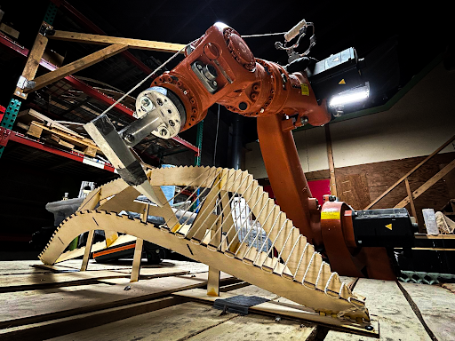
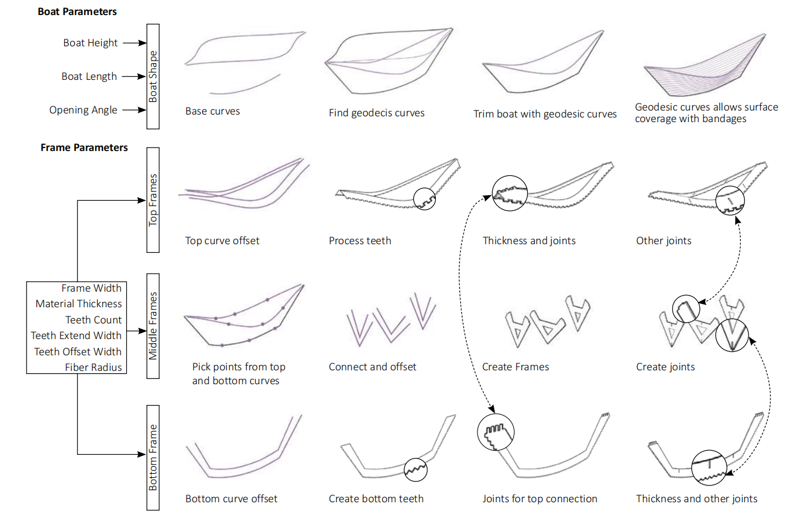
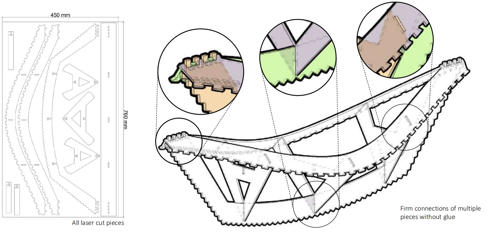
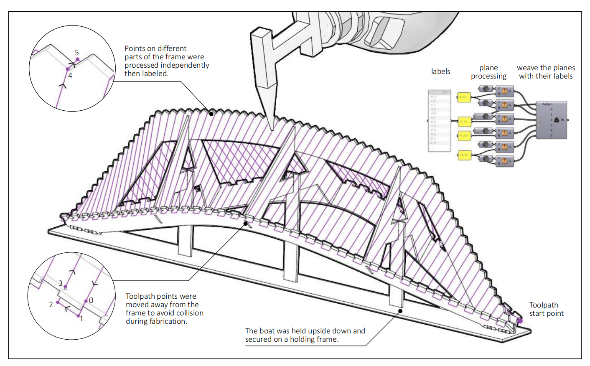
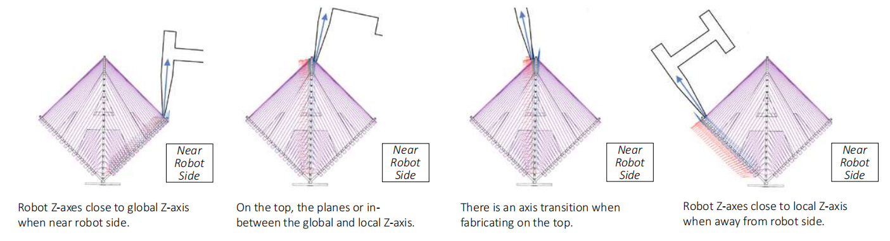
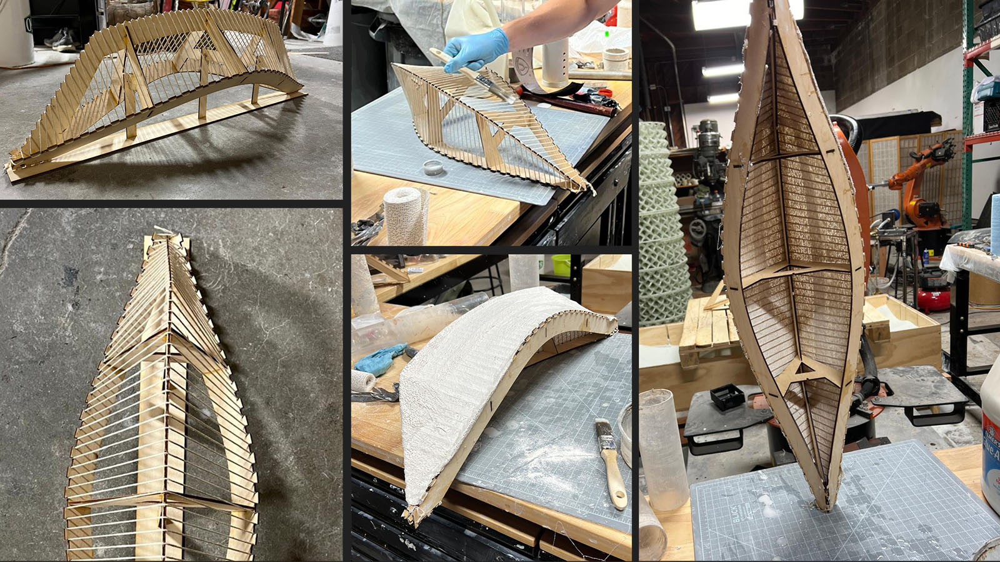
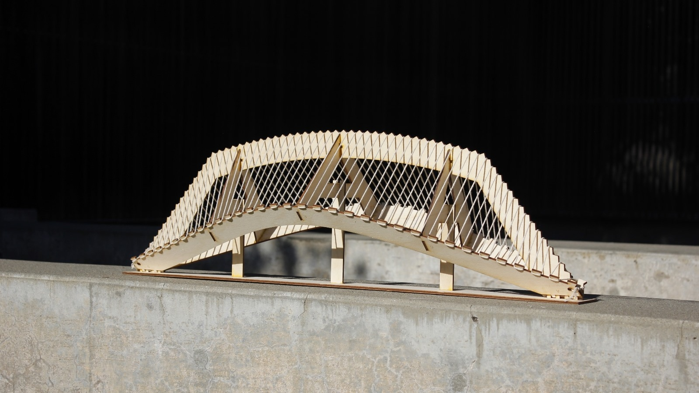

Making
Fiber-Winding Monohull
This project is a monohull constructed using fiber-winding with a six-axis robot. The frame was designed to be fabricated from flat plywood sheets, and fibers were used to form the surface of the monohull. A single toolpath was designed to cover the entire surface with a continuous fiber, simplifying the construction process. After the fiber-winding was completed, bandage and a waterproof coating was applied to the surface.





